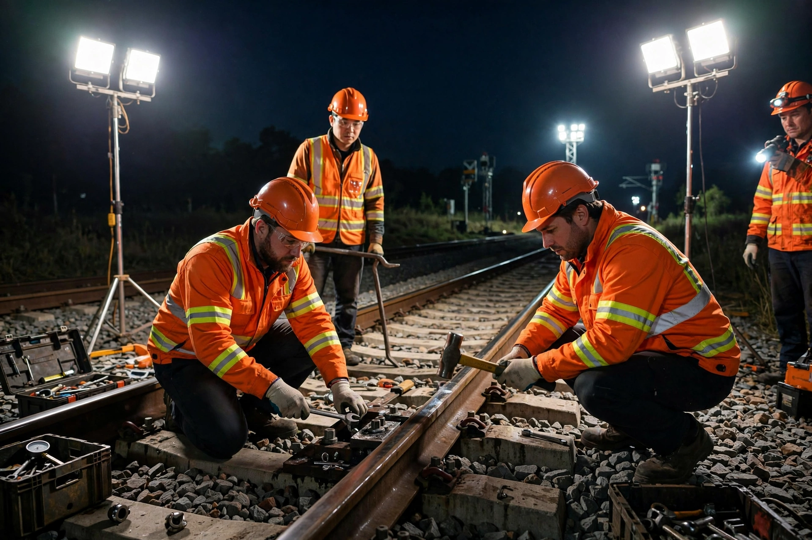

Network Rail
From Wikipedia, the free encyclopedia

Network Rail is the owner and infrastructure manager of most of the railway network in Great Britain — 20,000 miles of track, 30,000 bridges and tunnels, signalling and the largest stations. Created in 2002 as a not-for-dividend company replacing the failed Railtrack after the Hatfield crash, it was reclassified as a public-sector body in 2014; its functions are due to pass to Great British Railways under the Labour government's rail reforms from the late 2020s.
Role and history
Network Rail maintains and renews the infrastructure, allocates capacity and timetables the network, operating 20 managed stations (Waterloo, Euston, King's Cross among them). Its borrowing-fuelled enhancement era (electrification programmes, Thameslink, the Ordsall Chord) mixed engineering triumph with cost overruns (the Great Western electrification's trebling) that reshaped its governance — debt on the Treasury's books since 2014.
Reform
Successive reviews (McNulty, Williams) diagnosed the privatised structure's fragmentation; Network Rail's devolution into routes and regions prefigured Great British Railways, the 'guiding mind' body announced in 2021 and legislated by the post-2024 government to reunify track and train progressively as franchises are renationalised.